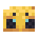

採集樣本
接近 Minecraft 中的生物並使用注射器收集樣本。
Minecraft Java Edition · 搶先體驗 0.2.1
建造實驗室，研究 12 種變異株，獲得 Minecraft 生物的能力，也繼承牠們的弱點。

遊戲玩法
接近 Minecraft 中的生物並使用注射器收集樣本。
使用序列器解鎖更強的血清。按 G 開啟基因樹。
在離心機中處理以獲得純化的基因組。
在合成器中組合基因組、誘變劑鹼基和催化劑。
轉變
第一個被動特質出現。
怪物的斑點遍佈在你的皮膚上。
你的身體開始改變形狀。
飛行菌株獲得飛行。無手形式失去了副手。
你採納了暴民的形態。變化停止衰退。
兩次注射之間，變身進度可能倒退。達到完全形態後，可使用逆轉血清恢復原狀。
變異株圖鑑
展開變異株卡片即可查看特性。
力量 在黑暗中再生
弱點 在陽光下燃燒
力量 箭矢傷害更高
弱點 脆弱的骨頭
強度 苦力怕不再對你嘶嘶作響
弱點 靠近貓時驚慌
力量 攀爬牆壁：貼著牆即可向上爬，潛行可以抓住不放
弱點 易受火焰傷害
Strength 長腿可以跨過整個方塊
弱點 水和雨像酸一樣灼燒
力量 鰓：可在水下呼吸
弱點 在陸地上笨拙
Strength 飛行：連按兩次跳躍。飛行消耗飢餓值；雨和水會讓你無法飛行
弱點 水和雨會澆熄火焰，並造成傷害
強度 飛行：連按兩次跳躍。飛行消耗飢餓值；雨和水會讓你無法飛行
弱點 在陽光下燃燒

蜜蜂力量 花粉：附近的作物和樹苗長得更快
弱點 以甜食為生：蜂蜜、漿果、水果
Strength 像狼一樣奔跑
弱點 只吃肉
力量 無論有沒有金子，豬布林都視你為同類
弱點 貪金：不丟棄任何金色的東西
力量 水棲之軀：帶浮力的快速游泳、鰓以及清晰的水下視野
弱點 只能在水中呼吸；在陸地上會缺氧，視線變得混濁
mods 資料夾。多人遊玩時，伺服器和所有玩家須使用相同版本的 Mutagen。Pehkui 是用來調整身體大小的選用模組。